|
|
HELP FIND THE FOLLOWING LOCATIONS
PAGE 22
THE SAINT:
The Time to
Die (Roy Baker: April 1968)
R3: Northbank, Totteridge Lane, Totteridge (demolished and redeveloped as 138 and 138a)
- Simon arrives in his Volvo
at the address he has been given by Charlie Mason. He finds that he has
been
expected.
(Identified by Jeff Watson of the Behind the Camera Facebook page, August 2023)
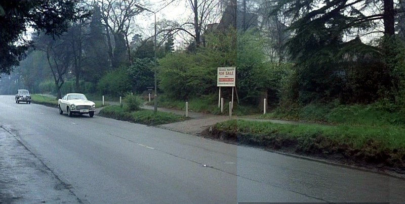

The Common,
Stanmore - The Saint is driven to
a meeting with the kidnapper in a chauffer driven Rolls Royce. They
start the
journey by heading towards Dover.
Identified by Geoff Dodd, February 2019
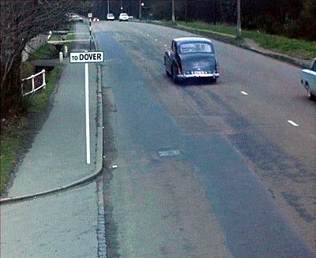
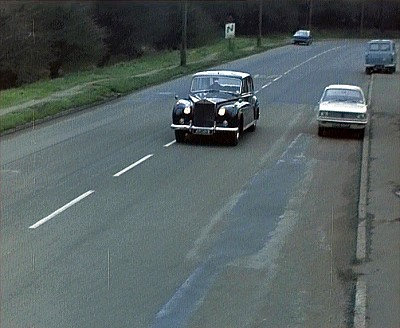
 This Rolls
Royce also visits Stanmore.
This Rolls
Royce also visits Stanmore.
THE SAINT:
The Effete
Angler (Anthony Bushell:
1962)
Unknown 1 (somewhere on the river
Hamble)
-
The Saint is on vacation
in Miami.
Sitting by the quay side he watches as Gloria Uckrose
(Shirley Eaton) arrives with a
large fish. Later he is introduced to charter boat captain, Patsy
O'Kevin,
but is
unable to charter a boat. He eventually manages to hitch a ride with
Gloria to Biminy
Harbour.
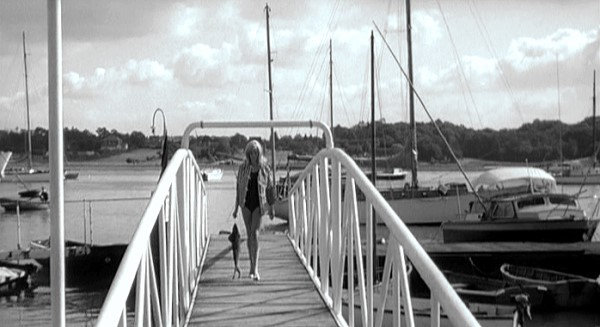
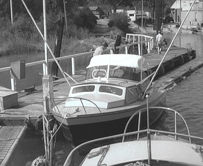
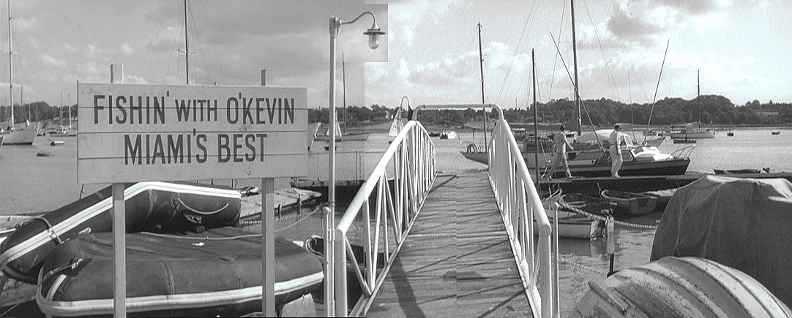
Gloria Uckrose and Simon arrive at Bimini harbour in Patsy O'Kevin’s boat.
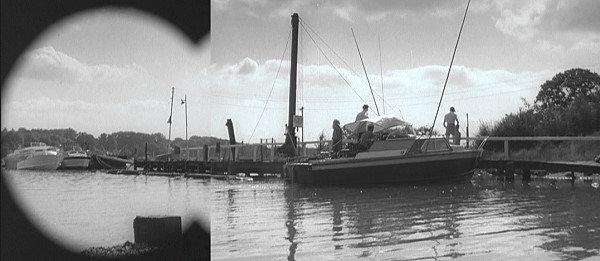
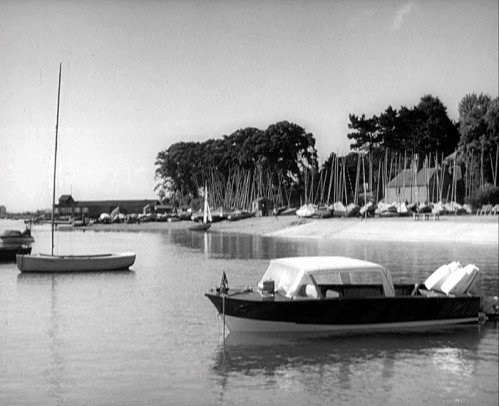
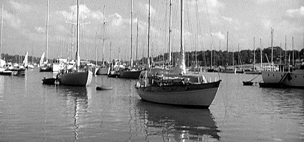
 From The
Saint - From Big Screen To Small Screen And
Back Again. Roger Moore: "One
of the locations was meant to be Biminy,
but we just went down to Hamble
and shot the boat stuff on the
estuary there." Bosham
was used in The
Gentle Ladies.
From The
Saint - From Big Screen To Small Screen And
Back Again. Roger Moore: "One
of the locations was meant to be Biminy,
but we just went down to Hamble
and shot the boat stuff on the
estuary there." Bosham
was used in The
Gentle Ladies.

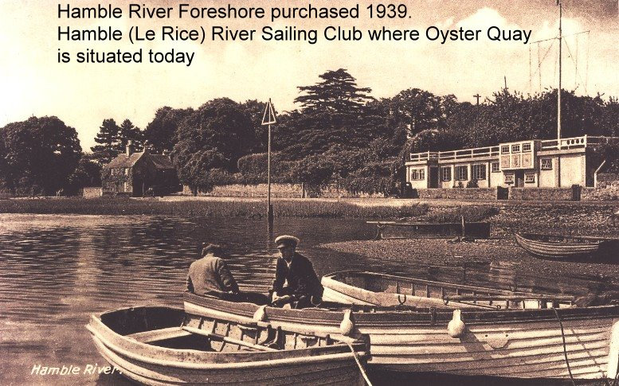
2399
Collins Avenue Miami Beach, Florida, USA -
Establishing shot of Miami Beach (the
Helen Mar Building, is still standing as is the footbridge which leads
across
to Lake Pancoast Drive)
(Identified by Geoff Dodd, December 2013)

Montagu Beach Hotel, Nassau, Bahamas - Miami Beach, Florida
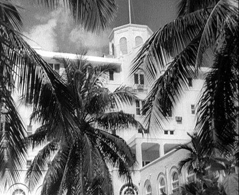
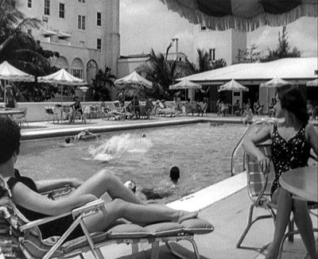
Nassau Beach Hotel, Nassau, Bahamas - Miami Beach, Florida (Nassau Beach Hotel, Cable Beach, redeveloped)

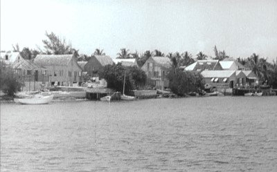
Unknown 5 - A hotel in Bimini.
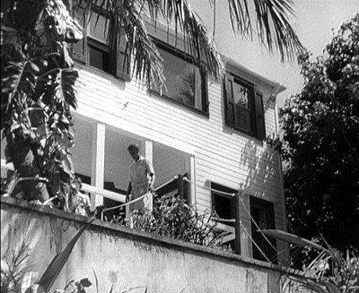
THE
SAINT: The Rough Diamonds
(Peter Yates: 1963)
Unknown
1
- The Continental Armoured
Security car continues travelling towards Gatwick Airport to pick up a
consignment of industrial diamonds
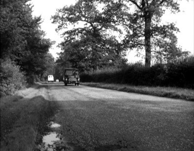
 Green
Street?
Green
Street?
Unknown 2 - The robbers have set up diversion on the road to Gatwick Airport and the Continental Armoured Security car is directed down a country lane towards an ambush.
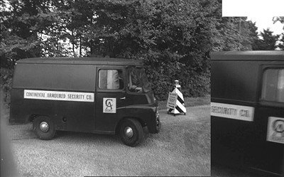
 Junction
with Crossoaks
Lane?
Junction
with Crossoaks
Lane?
Unknown 3 - The Continental Armoured Security car is lured into a trap by Ricco (Paul Stassino) and Joe (Ray Austin). When the car stops and security guard, Johnny Maxwell (Frank Jarvis) gets out to investigate a faked crash he and his colleague , Pete Ferguson (Geofrey Palmer), are shot by Ricco.
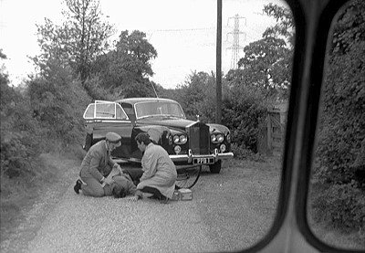
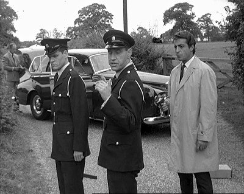
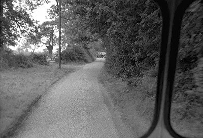
 Crossoaks
Lane?
Crossoaks
Lane?
Unknown 4 - After stealing the industrial diamonds from Gatwick Airport, Joe and Ned drive the stolen Continental Armoured Security car to a rendezvous.
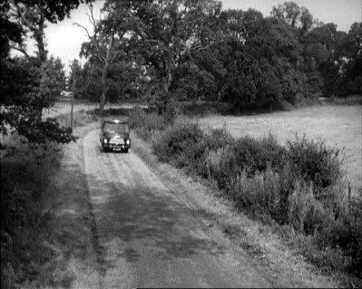
St
James’s Street, SW1
- After
Simon and Barbara Sinclair leave Barbara’s flat, in the Volvo, they are
followed by Rocco an
Joe in their Zephyr. This soon turns into a game of cat and mouse.
(Identified by Geoff
Dodd with help from Robert Lewis, February 2019)
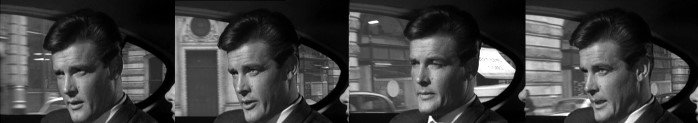
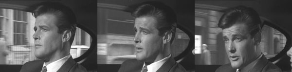
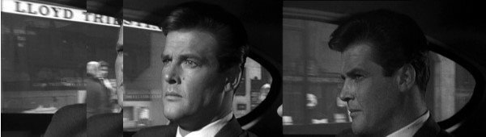
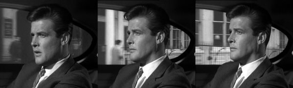
Eaton Place, London, SW1 -
After
Simon and Barbara Sinclair leave Barbara’s flat, in the Volvo, they are
followed by Rocco an
Joe in their Zephyr. This soon turns into a game of cat and mouse.
(Identified by Sietse Postma, July 2019)
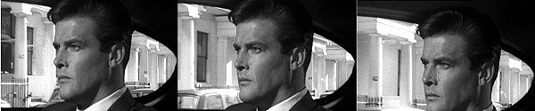
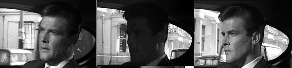
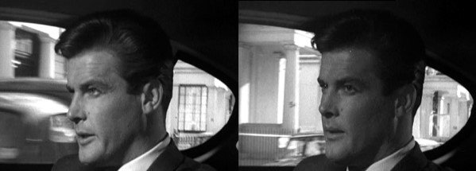
Think you know a spot? Need a bigger image? Email me.
< Previous | Index | Avengerland | Next >
Copyright © 2023 Anthony R. McKay